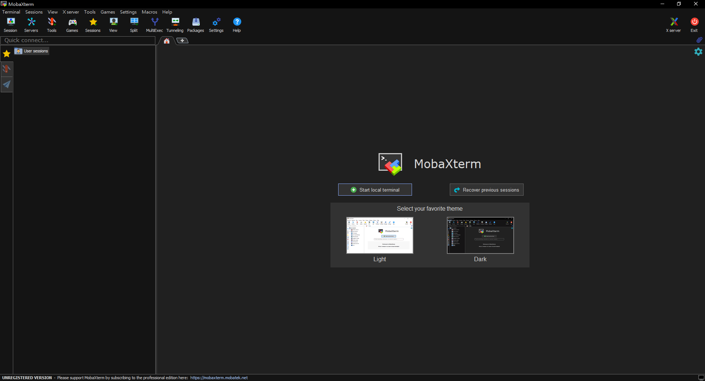

知識庫
不用擔心伺服器太難使用，這裡一步一步的教您如何使用伺服器，善用Ctrl + F找尋您要的關鍵字吧!
目錄
後台指令、檔案操控教學 - 點擊此閱讀
網站架設教學 - 點擊此閱讀
Minecraft伺服器架設教學 - 點擊此閱讀
伺服器介紹
伺服器(英文稱：Server)是指提供網路用戶使用服務，像是網站、社交軟體、線上遊戲等網路服務。多數的伺服器主要都是使用Linux核心，像是Ubuntu, CentOS等作業系統。使用Linux架設伺服器主要原因是：資源占用率低、安全性較高、穩定性較高、較多伺服器程式還有免費。水滴託管販售的伺服器是以Linux為主，因此以下教學也是以Linux為主。
如何連線至Linux伺服器後台
Linux多數是使用SSH加密的網路傳輸協定連線，以下使用MobaXterm作為SSH連線教學，其他SSH程式使用方式大同小異!
1. 前往MobaXterm官網下載：點擊此處前往
2. 下載並安裝完成後，開啟程式將會看到此畫面：
3. 點擊左上角Session按鈕 -> 點擊SSH按鈕 -> 依序輸入連線位置、使用者名稱 -> 按下OK按鈕
4. 輸入密碼(密碼不會顯示，輸入完後直接按下Enter即可)
如何傳輸檔案至Linux伺服器
Linux多數是使用FTP或SFTP檔案傳輸協定連線，以下一樣使用MobaXterm作為FTP或SFTP連線教學，其他FTP或SFTP程式使用方法大同小異!
1. 開啟MobaXterm -> 點擊Session按鈕 -> 點擊FTP或SFTP按鈕 -> 依序輸入連線位置、使用者名稱 -> 按下OK按鈕
2. 程式將會跳出小視窗，輸入密碼即可連線
左側是用戶端的檔案｜右側是伺服器端的檔案
如果要從用戶端上傳檔案至伺服器，請將左側指定檔案拖曳至右側。反之如果要從伺服器端下載檔案至用戶端，請將右側指定檔案拖曳至左側。